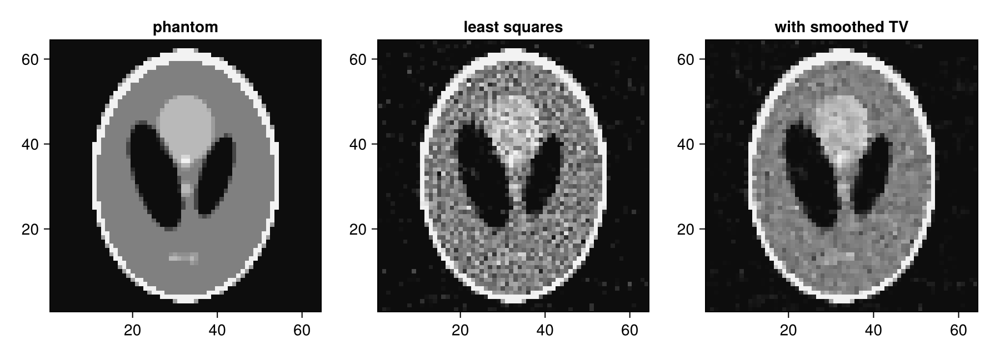

Differentiate through a projector
Applying a projector, op * x, has a reverse-mode rule for ChainRulesCore.jl, so automatic differentiation packages that use these rules, such as Zygote.jl, can differentiate code that contains projections: loss functions, unrolled reconstruction networks or physics-based models. The rule is loaded with ChainRulesCore (a package extension).
Since the operator is linear, the derivative of op * x with respect to x is the operator itself, and the backward pass applies the back projection. The same holds for adjoint(op) * y. Derivatives with respect to the geometry (positions of source and detector) are not provided.
using CTOperators, ImagePhantoms, Zygote, CairoMakie, LinearAlgebra, Random
using ImageGeoms: axis
n = 64
image = ImageGeom(; dims=(n, n), deltas=(1.0, 1.0))
x_true = Float32.(phantom(axis(image, 1), axis(image, 2), shepp_logan(SheppLoganToft(); fovs=(n, n)), 2))
op = JosephProjector(image, parallel_beam(; angles=range(0, pi, 31)[1:30], nu=2n, nv=1, du=0.5))
Random.seed!(1)
y = op * x_true
y .+= 0.02f0 * maximum(y) .* randn(Float32, size(y));The gradient of a data term
For the least-squares data term the gradient is known in closed form, adjoint(op) * (op * x - y); Zygote finds the same:
data_term(x) = sum(abs2, op * x .- y) / 2
x0 = rand(Float32, n, n)
g = Zygote.gradient(data_term, x0)[1]
norm(g - adjoint(op) * (op * x0 - y)) / norm(g)0.0f0A custom objective
The benefit is in objectives without such a closed form. Here a reconstruction from only 30 noisy views, with a smoothed total-variation penalty that is easy to write down and has no ready-made solver, minimised by plain projected gradient descent:
function smoothed_tv(x; epsilon=0.03f0)
dx = x[2:end, 1:end-1] .- x[1:end-1, 1:end-1]
dy = x[1:end-1, 2:end] .- x[1:end-1, 1:end-1]
sum(sqrt.(dx .^ 2 .+ dy .^ 2 .+ epsilon^2))
end
objective(x, lambda) = data_term(x) + lambda * smoothed_tv(x)objective (generic function with 1 method)The step size must stay below the inverse Lipschitz constant of the gradient: the largest eigenvalue of adjoint(op) * op, estimated by power iterations, plus 8 lambda / epsilon for the penalty.
function largest_eigenvalue(op; iterations=30)
v = rand(Float32, imagesize(op))
for _ in 1:iterations
v = adjoint(op) * (op * v)
v ./= norm(v)
end
norm(adjoint(op) * (op * v))
end
L = largest_eigenvalue(op)
function descend(lambda; iterations=600, epsilon=0.03f0)
x = zeros(Float32, n, n)
step = 1 / (L + 8 * lambda / epsilon)
for _ in 1:iterations
x .-= step .* Zygote.gradient(x -> objective(x, lambda), x)[1]
x .= max.(x, 0)
end
x
end
x_ls = descend(0.0f0)
x_tv = descend(0.5f0);
fig = Figure(size=(900, 320))
for (j, (name, img)) in enumerate((("phantom", x_true), ("least squares", x_ls), ("with smoothed TV", x_tv)))
heatmap(fig[1, j], img; colormap=:grays, colorrange=(0, 0.4), axis=(; title=name, aspect=DataAspect()))
end
The relative errors of the two reconstructions:
norm(x_ls - x_true) / norm(x_true), norm(x_tv - x_true) / norm(x_true)(0.1779069f0, 0.120681725f0)This page was generated using Literate.jl.